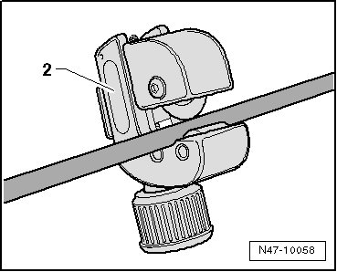
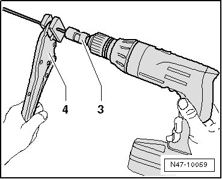
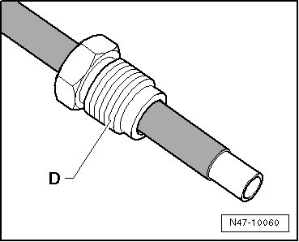
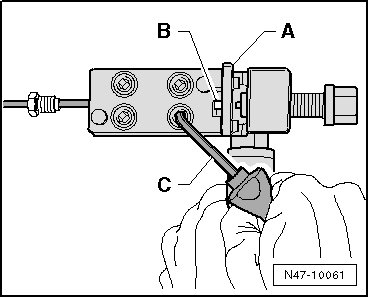
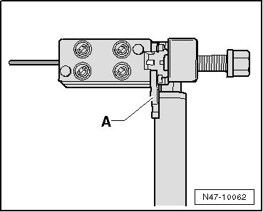
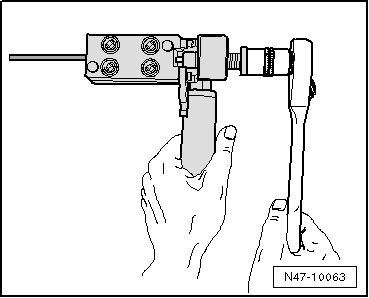
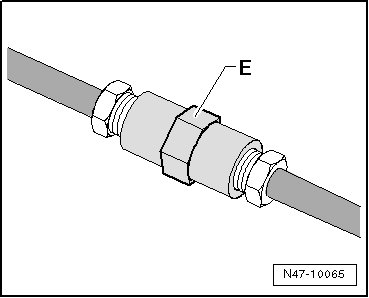

Brake Line Repairing Instructions
Brake Line Repairing Instructions
- Disconnect affected brake line from the brake caliper or wheel cylinder and collect draining brake fluid and dispose of it correctly.
- Cut the brake line at the appropriate location (straight, accessible part) with line cutter - 2 -.

- Remove the piece to be exchanged.
- Lubricate the brake line surface.
- Clamp the brake line with the self grip pliers - 4 - so that 50 mm of the plastic clamping jaws show.

- Install the shearing tool - 3 - in a drill motor and place it on the brake line.
- Shear the coating from the brake line at a slow drill speed and with light pressure against the line.
The length of the sheared off portion is determined by the stop in the shearing tool.
- Remove the shearing tool from the brake line and remove shearing remains.
- Remove the self grip pliers and tube fitting - D - from the brake line.

- Slide the brake line - B - in until resting against the stop - A - in flaring tool.

• The brake line must contact the stop when the screws are tightened, otherwise the flared head will not be formed correctly.
- Clamp the brake line in the flaring tool until it cannot be moved any more. Fold the stop - A - up and tighten screws diagonally with angled screwdriver - C -.

- Turn the spindle to the stop in flaring tool.

- Turn the spindle back.
- Loosen screws diagonally.
- Remove the brake line from the flaring tool, clean and check the brake line and flared head.
Briefly rinse part of the brake line remaining in vehicle.
- Connect the brake charger/bleeder unit (VAS 5234), place bleeder container hose on flanged head of brake line and run brake charger/bleeder unit (VAS 5234) briefly until some brake fluid runs through.
- Blow out the brake line to be inserted with compressed air.
- Join brake lines with a connecting piece - E -.

- Assemble brake line.
- Bleed the brake system. Refer to --> [ Bleeding with Brake Charger/Bleeder Unit VAS 5234 or VAG 1869 ] Bleeding with Brake Charger/Bleeder Unit VAS 5234 or VAG 1869.